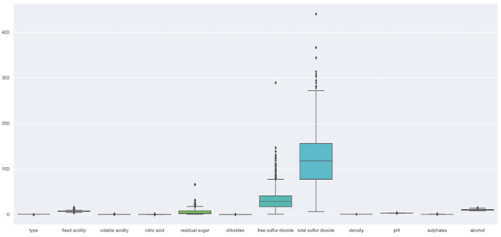
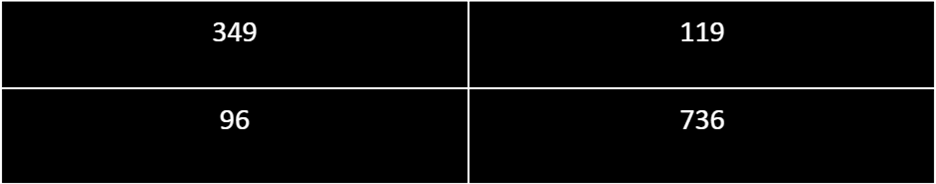
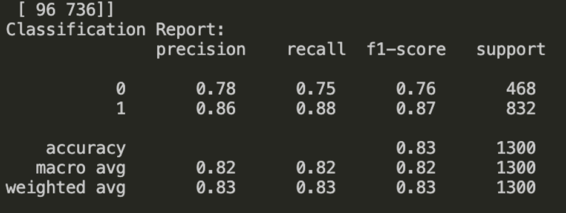

![]()
Wine has been a popular drink for thousands of years and continues to be a highly sought after drink even today. There are many different factors for each wine besides the alcohol that determine how good it is, and by looking at these factors, wine quality can be better predicted. The dataset for this proposal is from Kaggle and includes a result of a red wine quality score based upon 11 other physicochemical properties . In a study conducted by Gambetta, Cozzolino, Bastian, and Jeffrey (2016), they find a correlation between chardonnay juice and the compositions of wine from different regions of Europe. Additionally, in a study done by Sinton, Ough, Kissler, and Kasimatis (1978), there is correlation found between crop level and other factors such as intensity ratings.
This project is designed for people who are beginners in wine tasting. Wine can get expensive, and there is a lot of information that goes into picking a good quality. Beginners can get confused easily in choosing good quality wines versus bad quality ones. We hope to quell this confusion by having a place for beginners to choose a high rated wine based on certain factors like manufacturing, year, acidity, etc. Also, by having this project, beginners can save their money by not wasting it on bad wine.
This dataset comes from Kaggle. It combines two datasets that both relate to red and white variants of Portuguese “Vinho Verde” wine. It includes physicochemical and sensory variables. The classes of the data set are ordered and not balanced. There is no information listed about whether all the variables listed are applicable to determining the ranking of the wines.
Categorical data is easily understood by humans but machines cannot interpret and evaluate categorical data, so we have to convert the string data into numerical data. We wrote a method for preprocessing the string values in the dataframe into numerical values. First the categorical value ‘red’ was replaced with the numerical value ‘0’ and white was replaced with ‘1.’ For our analysis of the data, we have chosen to classify a wine as “good quality” if the given quality, between 0 and 10, is above 5. Therefore, the values for quality of wine were assigned based on their quality levels.
To create a more efficient model, we chose to replace the null values in the dataset. Those null values can hinder the performance and cause noise when running the prediction model. We used Dataframe.fillna() from the pandas’ library to replace all these null values with the mean of that particular column from the dataframe.
Normalization of the dataset is necessary as it alters the numeric values in each column to fit a common scale. This allows for data to be observed and analyzed by accounting for the differences in ranges of values. Every dataset does not require normalization, but our dataset does due to it having different features which have varied ranges. In order to do this, we first converted the columns of our dataset to a list format and created a MinMaxScaler object which alters features by scaling each one to the same range. We used this in our dataset and then converted it to a table format using pd.DataFrame().
PCA allows us to effectively preprocess our data components by cleaning the outside noise and creating principal components for better use for our supervised learning model. With our analysis, we chose 97% variance as it allows us to explain all of our principal components. After fitting and transforming the data, we return this revised dataframe.
The random forest algorithm is a supervised machine learning algorithm that uses the “bagging” method, or combining multiple learning models, in order to obtain a more accurate and stable prediction. We used this algorithm because it can be used for classification problems, which is how we are viewing our dataset. This method uses the random forest classifier class. Then, it splits the features and target into train and test sets and computes the accuracy score.
Logistic Regression is based on the logistic function which is also called the sigmoid function. It’s an S shaped curve that maps a real-valued number into a value between zero and one. The zero represents failure or no and the one represents success or yes. Essentially, logistic regression models the probability of the default class using an equation. Logistic regression is typically used in classification problems, which is fitting for our project, when the dependent variable is dichotomous or categorical. After running the logistic regression method on our dataset, we received an accuracy of 73.23%.
Stochastic gradient descent implies a process linked with random probability. Using the entire dataset is useful in order to get a minimal amount of noise and randomness. However, if the dataset is too big, it is too computationally expensive to complete all samples for each iteration. Instead of using the entire dataset, SGD uses only one sample which is randomly shuffled and selected to perform. Because Stochastic Gradient Descent is typically noisier than a typical Gradient descent, it takes more iterations to reach the minima which is okay because it is still computationally less expensive than GD. After running the SGD method on our dataset, we received an accuracy of 74.15%.
Decision tree algorithm essentially functions to make a training model that can predict the value of a target variable, and it does this by learning or inferring decision rules from the set of training data. The structure is similar to a tree with nodes and branches in which it starts from the root. The internal nodes represent attributes while the leaf nodes are class labels. It gives predictions based upon the series of splits that occur due to features. Essentially, the sub-nodes created allow for more homogenous data as it splits based upon similarity as mentioned before. After running the decision tree method on our dataset, we received an accuracy of 77.38%.
Before we used any models, we first displayed our dataset to better illustrate the types of components for wine quality.
We then preprocessed the data components by using PCA to clean the outside nose and create principal components to better use for our supervised learning model. With our analysis, we chose 97% variance as it allows us to explain all of our principal components. After fitting and transforming the data, we ran all of the models. For our study, our team conducted 4 different model types to effectively measure wine quality. The 4 types of models we chose are the Random Forest, Logistic Regression, Stochastic Gradient, and Decision tree models. After running each model, we then ran a prediction function to record each model’s accuracy.
Here are the accuracy results from these modeling algorithms:
Accuracies: Random Forest Accuracy: 83.46%
Logistic Regression Accuracy: 73.23%
Stochastic Gradient Descent Accuracy: 74.15%
Decision Tree Accuracy: 77.38%
Based on these accuracies, we can conclude that the Random Forest model performed the best. To further analyze this data, we created a confusion matrix to plot any inaccuracies in the data predictions. For those predictions that were incorrect, the confusion matrix displays where in fact the classifier made an incorrect prediction. We can observe in our created confusion matrix when the actual label and predicted label match in addition to when the classifier mislabeled observations. The two rows represent the actual data predictions. The two columns represent the predicted data predictions. From the confusion matrix, we can analyze that 735 correct predictions were made with the actual performance.
We then created a classification report to measure the quality of the predictions from our algorithm. The prediction label checks to see what percentage of predictions are correct, recall checks what percent of the positive cases were caught by the algorithm, F1 checks what percent of positive predictions were correct, and support is the number of actual occurrences of the class in the specified dataset. These values are split between red and white wines, 0 for red and 1 for white. Looking at the results, we have a high precision value and a high recall value. A high precision (78% of red wine and 86% of white wine) based on the scale that more than half of our data components have true positives over false positive values. Based on the results, there was also an indication of a high recall percentage (75% of red wine and 88% of white wine) which indicates that our dataset has more true negative values versus false negatives. This creates a better overall model as more false positives and false negatives can negatively skew our prediction accuracy. This can also be indicated by our high f1-score (.76 for red wine and .87 for white wine), which is an effective indicator of precision and recall.
From preprocessing the data components using PCA, we were able to receive accuracies of above 70% for each model. These results represent a strong indication that all of these algorithms can be used to predict wine quality. The success of these models can be attributed towards their strengths in handling large datasets with a lot of variability.
Based on our best model accuracy of 83% from the Random Forest Classifier, we can attribute that our model can effectively predict wine quality based on a variety of different factors such as acidity, density, sugar and sulfur dioxide.
In regards to the remaining gap of 17%, this can be attributed to the components being measured in the model. Since there was a set number of features included in the dataset, some of the other features that go into determining wine quality was omitted. Some of these features include opacity and viscosity. In addition to this, the dataset itself may not be representative of certain smells and tastes of wine that are deemed good quality by the general population. For future studies and research on the topic, it may be beneficial for these models to incorporate more features to effectively measure the quality. Although these models predict accuracy very well, our model does not predict the tastes, smells, and trends that society may have for certain factors of wine. For these measures, an incorporation into the dataset may be difficult but represents an important fact that wine quality is only as good as the wine drinker deems it to be. Altogether, our study concludes that the Random Forest Model most accurately predicted the key components to choose high quality wine.
1. Bajaj, Aayush. “What Does Your Classification Metric Tell about Your Data?” Medium, Towards Data Science, 24 Mar. 2021, https://towardsdatascience.com/what-does-your-classification-metric-tell-about-your-data-4a8f35408a8b.
2. Brownlee, J. “Logistic regression for machine learning”. Machine Learning Mastery, April 27, 2022, https://machinelearningmastery.com/logistic-regression-for-machine-learning/.
3. Donges, Niklas. “A Complete Guide to the Random Forest Algorithm.” Built In, 2021, https://builtin.com/data-science/random-forest-algorithm.
4. Gambetta, Joanna M., et al. “Towards the Creation of a Wine Quality Prediction Index: Correlation of Chardonnay Juice and Wine Compositions from Different Regions and Quality Levels - Food Analytical Methods.” SpringerLink, Springer US, 15 Mar. 2016, https://link.springer.com/article/10.1007/s12161-016-0467-9#Sec2.
5. Jaitley, Urvashi. “Why Data Normalization Is Necessary for Machine Learning Models.” Medium, Medium, 9 Apr. 2019, https://medium.com/@urvashilluniya/why-data-normalization-is-necessary-for-machine-learning-models-681b65a05029.
6. Parmar, Raj. “Wine Quality.” Kaggle, 9 July 2018, https://www.kaggle.com/datasets/rajyellow46/wine-quality.
7. Shaw, Sweta. “Beginners Friendly - Comparison of Classifiers.” Kaggle, Kaggle, 4 Oct. 2021, https://www.kaggle.com/code/swetash/beginners-friendly-comparison-of-classifiers.
8. Shin, Terence. “Predicting Wine Quality with Several Classification Techniques.” Medium, Towards Data Science, 4 Dec. 2021, https://towardsdatascience.com/predicting-wine-quality-with-several-classification-techniques-179038ea6434.
9. Sinton, T. H., et al. “Grape Juice Indicators for Prediction of Potential Wine Quality. I. Relationship between Crop Level, Juice and Wine Composition, and Wine Sensory Ratings and Scores.” American Journal of Enology and Viticulture, American Journal of Enology and Viticulture, 1 Jan. 1978, https://www.ajevonline.org/content/29/4/267.
10. “Wine Quality Prediction Using Machine Learning: Predicting Wine Quality.” Analytics Vidhya, 27 Apr. 2021, https://www.analyticsvidhya.com/blog/2021/04/wine-quality-prediction-using-machine-learning/.